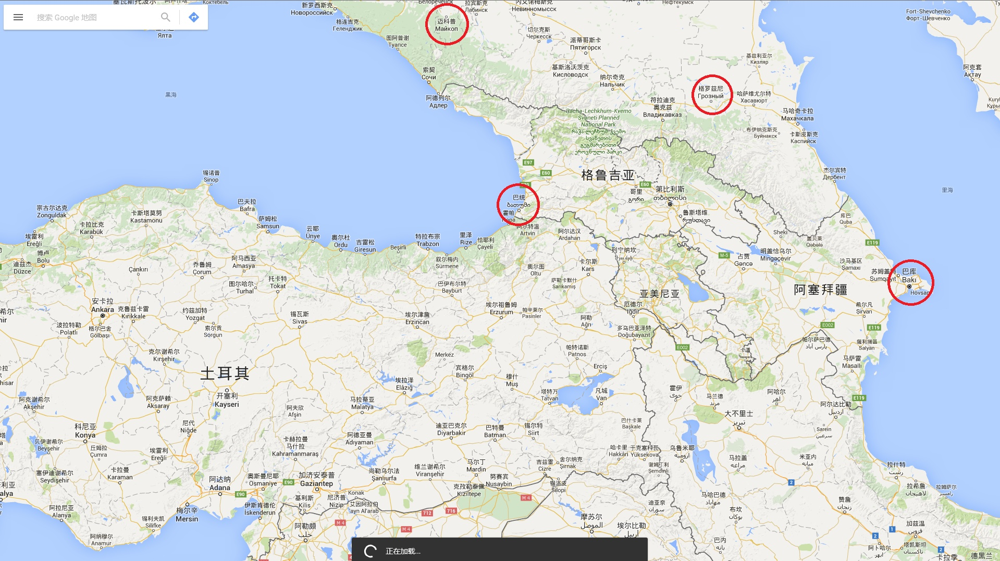
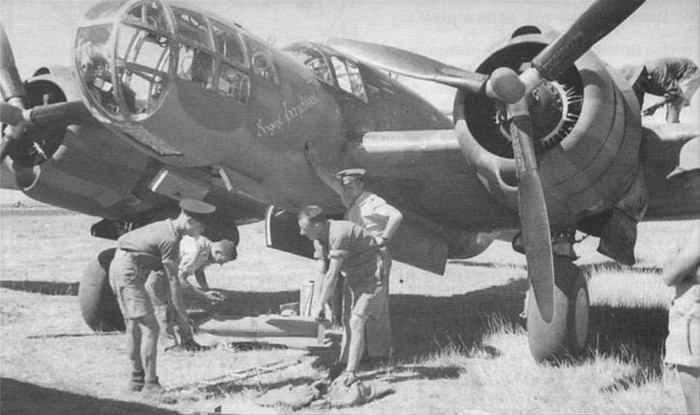
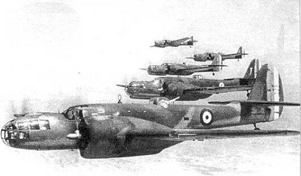
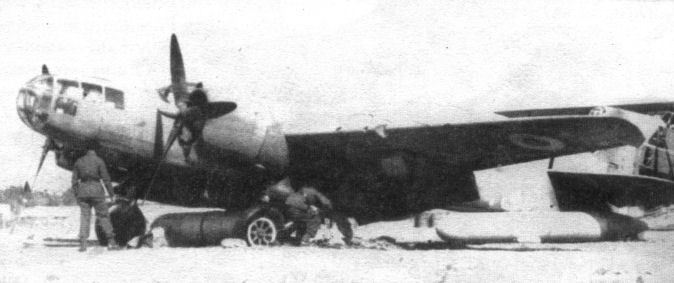
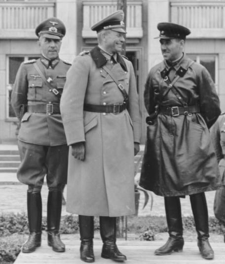
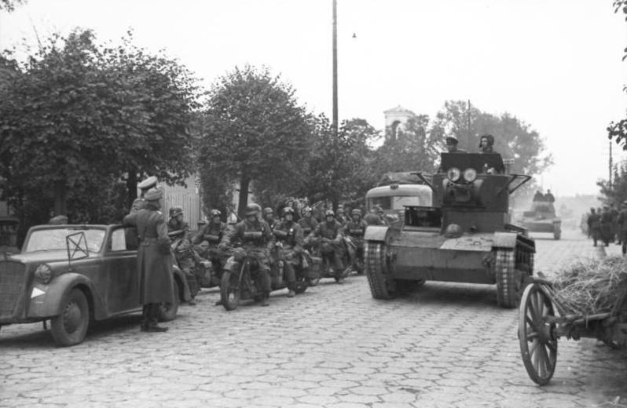

“生的荒唐、死的窝囊 ” —— 记75年前叙利亚那场未竟的军事冒险 近日以来，俄罗斯空军在叙利亚动作频频使得叙利亚局势再次成为国际主流视野的焦点。特别是在巴黎恐怖系列袭击事件发生后，法国加大了对ISIS组织的空袭力度；紧接着继一个月以来的笔墨官司后，土耳其与俄罗斯空军间围绕叙利亚行动引发的系列摩擦终于升级成了交火事件，一时间大有风雨欲来中东战事全面升级之势头。固然当前网友们口中的“俄国大军登陆特拉布宗、”“普大帝身着紫袍重返君士坦丁堡”类似言论更多是看热闹不嫌事大的夸张式调侃搞笑，
然而事实上这已经不是叙利亚第一次因法国在内的西方势力干涉而成为世界性的战争危机中心了：早在75年之前，英法两国围绕叙利亚为中心展开的一次未竟的军事冒险，险些掀起比今日更大、甚至于改变整个旧大陆世界格局与命运的波澜。 1.
时间倒回76年前，1939年4月16日，时任苏联外交人民委员马克西姆·李维诺夫在会谈中向英国驻苏大使西兹提出了一个正式建议，主张英法苏三国结成联合阵线，对中欧和东欧受德国侵略威胁的国家（波兰、罗马尼亚、芬兰、爱沙尼亚、拉脱维亚）提出安全保证。然则这一提议遭到了来自几乎所有被提议保护国家的强烈反对：
地缘政治而论，对这些小国来说，苏联迫切寻求在中欧和东欧充当缓冲的“友好”国家的强烈意愿，和纳粹德国试图在同一地区实现控制从而达到“民族复兴”目标一样危险。 苏联人对陷入僵局的谈判已经失去了耐心，1939年5月3日，还没有等到英国人回复，帮助苏联加入国际联盟、对提高苏联国际威信做出了巨大贡献的李维诺夫便突然被总理莫洛托夫所取代，并遭到了软禁。
这一突如其来的职务变动实质上宣告长期以来苏联为应对纳粹德国一系列侵略活动而试图联合其他欧洲国家的集体安全政策最终失败。 5月2日还与李维诺夫有过接触的英国人措手不及，直到5月8日才匆忙提交了一份新提议——然则为时已晚：5月14日，莫洛托夫在给英国驻苏大使西兹的备忘录中，以安全保证的适用范围不够大、援助规模和形式的不具体为由予以回绝。
著名的反共斗士、英国首相丘吉尔在他的回忆录中这么描述李维诺夫被解职：“这位被德国视为眼中钉的卓越的犹太人，一时像一件破旧工具似的被丢在一边了；不让他为自己申辩，被毫不留情地撵出世界舞台，过幽居的生活，靠微薄的薪给度日，还受到警方的监视 。”然而站在苏联立场上，当苏联在捷克危机时期不惜进行了局部动员来震慑德国，而最终连慕尼黑会议的出席都没能获邀，那么英法等国关于加入集体防卫的谈判诚意便很值得商榷了 ——事实上即便是反共斗士丘吉尔本人也不得不同时承认：“俄国政府所提出的建议，是想成立反侵略的英法俄‘三国同盟’ ……联盟的目的，只是为了抵抗将来发生的侵略行为和保护被侵略的国家。……我看不出苏联建议有什么不好。这个简单的建议有什么不好的呢？有人说：‘你能信任苏联政府吗？’我想他们在莫斯科也会说：‘我们能信任张伯伦吗？
李维诺夫因其亲美英法等西方国家的关系，于1941至1943年短暂出任苏联驻美国大使，这位曾致力于推动美国承认苏联的外交家在此期间内又推动了租借法案适用于苏联。 不管怎样，伴随着莫洛托夫-里宾特洛普协定及其一系列新的经贸协定的签署，东西两线同时夹击纳粹德国的计划已经化为泡影。摆在英法两国面前的一个更迫切的问题：
如何避免纳粹德国从物产丰富的苏联获得其所稀缺的战略物资来支援其对英法战事 ——考虑到本位面在截止苏德战争爆发前的18个月内，德国从苏联获得了包括200万吨石油产品、14万吨锰、2.6万吨铬在内的巨额战略物资，这个担忧绝对不是多余的。
2.
1939年10月欧战爆发伊始，面对苏联向纳粹德国输血成为既定事实，英国参谋长委员会（英国并没有总参谋部传统）早早展开了对“英国对苏联宣战的利弊”问题的研究：时任国防协调大臣，查特菲尔德勋爵向参谋长委员会提交了名为《关于苏联石油开采区易受攻击》的报告。该报告明确指出，有鉴于苏联当时三个最主要的石油重镇：巴库（毗邻里海）、迈科普（毗邻黑海）、格罗兹尼（毗邻通向里海的捷列克河）由于储量丰富、油压偏高，均是采用粗放的喷射方式来开采，因此更容易遭受轰炸破坏，从而达到“使俄国及任何一个希望从它那里获得石油的俄国盟国失去石油 、”
“这个潜在敌人的全部机器因汽化器缺乏燃料而无法开动 ”的战略目标。

曾经的高加索四大石油重镇，巴库与巴统已经成了外国，格罗兹尼被民族主义者变成了国中之国，令人唏嘘。 突击高加索的方案得到了法国方面的大力配合。1939年8月欧战爆发前夕，法军近东地区司令部组建，出任总司令的是一位叙利亚人民的“老朋友”：曾于1923到1924年间短暂出任
黎凡特 （Levant一词源自法语“东方”，指代近东地中海区的国家地区，此处特指一战后被法国监管的叙利亚和黎巴嫩）地区高级专员（实质上的殖民地总督，“太上皇”）的
马克西姆·魏刚 。
在这里不得不稍微提及一下叙利亚当时的政治局面。根据1920年8月10日在法国签订的赛弗勒合约，叙利亚和黎巴嫩被划归法国的委托统治之下。随着战争阴影的逼近，1938年12月，法国政府决定不履行1936年人民阵线政府与叙利亚和黎巴嫩政府草签的关于给予半独立地位的条约，引发了当地民族主义者的强烈反弹。而1939年法国方面为促成英法土三方互相防卫同盟条约的签署，
默认了哈塔伊省公投加入土耳其（没看错，正是今下俄罗斯战机被土耳其击坠事件的事发地） ，更是导致了叙利亚政府的集体辞职。态度强硬的时任高级专员加布里埃尔·皮奥于是在7月7日宣布暂时废止叙利亚宪法，一并被撤销的还有叙利亚外交部和国防部，其事务由法国方面直接接管；而此时以法军近东地区总司令身份重返叙利亚的魏刚正好填补了这一权力空白。
根据英法两国达成的协议，新官上任的魏刚同英军中东总司令韦维尔、英国地中海海军司令坎宁安将互相配合进行这场高加索大冒险的准备工作，“
打断俄国的脊梁骨 （时任法国陆军总司令甘末林语）”。
../image/ 这并不是魏刚第一次参与针对苏联的军事行动。早在 1920 年 7 月，魏刚就作为法国军事代表团的一员来到波兰支援对苏战争，出任波兰军总参谋长、塔德乌什·罗兹瓦多夫斯基的高级顾问。然而由于魏刚和他的小伙伴们未能带来波兰人所急需的援军，使得魏刚等人在波兰的地位十分尴尬：他提出的军事建议几乎都被惨遭无视，不少波兰军官甚至在魏刚在场的场合只用其听不懂的波兰语交流。 8 月 25 日，华沙战役结束不久，只在波兰停留了一个月的魏刚带着一枚安慰奖式的波兰二等勇气十字勋章（ Virtuti Militari ）黯然登上了回国的火车。讽刺的是，回到巴黎的魏刚被不明真相的法国群众当成“那个拯救波兰乃至欧洲的英雄”热烈欢迎，当时还是法国总理的亚历山大·米勒兰还为此亲自授予其法国荣誉军团勋章大十字勋位（ Grand Cross of the Legion of Honour ）。 反复推敲后，两个性质相似的计划：英国的“MA—6计划”和法国的“RIP计划”在1940年春终告出炉。而无论是哪一个，英法方面对这次空袭行动均抱持有我们现代历史爱好者立场上所难以想象的乐观态度：对苏联油田和高加索各城市实施空袭只需包括有5个美制格伦·马丁式轰炸机机群和4个英国布莱汉姆式轰炸机群、约90至100架不等的规模， 从不同高度进行昼夜轰炸 ；信心满满的盟军参谋大胆预测，这样规模的空中突击足够“在一天半内摧毁巴统，在十二天内摧毁格罗兹尼，在十五天内摧毁巴库 ，”从而“决定整个战争的命运。 ”
../image/ ../image/ （所以说参谋大爷们不要再学地球另一面的同行们立奇怪的 flag 了……） 不同于英法远征军协同芬兰军切断摩尔曼斯克至列宁格勒交通线的计划姗姗来迟，最终沦为了激励曼纳海姆继续对苏作战的空头支票，各种意义上更为大胆的高加索方向突击计划已经不仅仅是停留在官僚们的笔头下：1940年3月20日在叙利亚的阿勒颇召开了驻黎凡特法军和英军指挥部代表的会议，会议中表示，“
空袭计划内涉及的二十个一级机场的建筑工程将于1940年6月前准备就绪 ”。一个月后的4月17日，魏刚向甘末林的报告中也传达了“
空中突击的准备工作将于6月底至7月初完成 ”的信息。


图一所示的是一架隶属法国空军的美制格伦·马丁 167 “马里兰”型轰炸机及其机组在 1940 年的叙利亚，图二则是编队飞行训练中的某宝同款（雾）。这款飞机在战初的英法空军中都有大量装备，他们是计划中对苏空袭中的主要力量，而事实上几个月后他们将随法国一并退出战争；更讽刺的是再过一年，他们将代表维西法国而战，抵抗来自一年前的盟友、中东英军司令部总司令韦维尔对叙利亚与黎巴嫩的进攻。 与此同时，盟军的陆军力量针对高加索地区的攻势也在紧锣密鼓筹备当中 ：1940年3月15日，甘末林的《关于作战问题》报告中提到，英国可能会主动提出使用伊朗领土进行对苏联的陆上攻势。同时法国在黎凡特集结的越来越多的兵力使土耳其军队有可能加入在南高加索地区的活动：此时仅魏刚麾下集结的法国陆军部队已经达到了8万人，其中驻扎在贝鲁特的三个师及其司令部已经被编组成了一个“黎凡特快速军队集群”在待命。值得一提的是，其中包括一只出身特殊的部队：由从南欧取道土耳其、一路撤到叙利亚的前波兰军队人员组成的喀尔巴阡步兵旅，约有4千余人。
一系列战备工作是如此频繁，以至于在大清洗中损失惨重的苏联情报系统也嗅到了危机。 1940年5月16日，时任乌克兰内务人民委员部（即大名鼎鼎的NKVD）边防军司令员奥索金和乌克兰内务人民委员部边防军政委克柳耶夫在给乌克兰内务人民委员部的特别报告中汇报了英法在土耳其的一系列物资调运活动：
“据第26边防总队可靠的境外情报，（英法）最近正加紧向土耳其运送武器……1940年4月27日，一艘法国商船抵达伊斯坦布尔，从上面卸下许多弹药箱，用途尚不清楚……1940年5月1日，在伊斯坦布尔停泊场，从一艘美国货轮卸下许多内装军事物资的箱子；同一日抵达伊斯坦布尔的还有两艘内装易燃物资的英国干货船……（希腊）比雷埃夫斯港囤积了大批从英国运来准备转运土耳其的炮弹，因船只不够至今还存放在比雷埃夫斯港……当地居民谣传，今年4月初一日夜里，有7条英国军舰未驶入比雷埃夫斯港而直接取道土耳其方向……据其他情报得知，这时在博斯普鲁斯海峡出现了几条疑似改装作潜艇母舰的英国油轮/电缆船……” 1940年9月，一位不速之客在苏联内务人民委员会的接应下经非法途径从土耳其潜逃了出来。这位生活在土耳其的格鲁吉亚裔侨民其真实身份是一位代号为“奥梅里”的间谍。因其与一位档案中被代称为“59号”的格鲁吉亚孟什维克党高层交往甚密，被NKVD发展成线人并成功叛逃。这位间谍为苏联方面带来了大量有关泛高加索地区各民族在海外流亡的民族主义者群体的相关情报，其中包括“59号”于1939年9月前往叙利亚与魏刚见面，并在其引荐下辗转至伊斯坦布尔为法国驻土耳其武官盖尔戈将军担任高加索事务顾问的一系列经过。在盖尔戈的帮助下，“59号”同包括土耳其参谋总长费夫齐·恰克马克元帅、奥斯曼帝国末代三巨头之首
恩维尔（这位著名的泛突厥主义者堪称如今东突势力的祖师爷） 的侄子努里、及其女婿奥尔倍将军等在内的土耳其军方背景浓厚的实权人物建立了联系。
法国方面竭力撮合格鲁吉亚民族主义者与土耳其人合作，强调双方正同苏联进行的共同斗争以及在高加索地区建立缓冲国带来的潜在共同利益。也正是在同上述相关人士的交往中，“59号”亦获悉了盟国方面准备轰炸巴库等高加索重镇的计划，并被“奥梅里”获悉。 然则就在突击行动已箭在弦上，欧战局势发生巨变。 随着国内战局灾难性的恶化，1940年5月17日，魏刚被急急忙忙召回国内接替被解职的甘末林，一片混乱中行动计划被搁置。6月17日，贝当在广播中要求停战；6月25日，新任法国国防部长的魏刚致电法国各殖民地司令官命令履行停战条件，叙利亚的法军陷入分裂：6月28日，接替魏刚成为法军近东地区总司令的米泰尔奥赛将军最终屈服于命令，封锁了法属黎凡特地区国家与英属巴勒斯坦的边境；而另一方面他的参谋长、未来的自由法国将领德·拉米纳上校带着包括波兰喀尔巴阡步兵旅在内的一小部分军队在留下了坦克等重装备后穿越边境与英军会合。
就这样，雄心勃勃的高加索军事冒险在一地鸡毛中胎死腹中。 发生叙利亚的黑色幽默并未画上句号。近一年后的1941年5月，为支援发生在伊拉克的武装政变，
在叙利亚的轴心国“停战委员会”征用了自休战以来一直被封存的法军武器、弹药并将它们运往伊拉克，用以对抗英军；曾是英法大力争取对象的土耳其，在轴心国的政治压力下也选择对其开放自己境内的铁路系统，好让从阿勒颇出发的军火列车可以直接驶抵伊拉克的摩苏尔；至于那些原本被修建用于对苏轰炸的空军基地也被开放给德国空军来支援伊拉克方向。 忍无可忍的英国人终于下定决心对一年前还在同一战壕内的法国近东军动手。5月14日，皇家空军开始轰炸叙利亚境内德国人正在使用的机场；6月8日，盟军部队开入叙利亚境内，与一年前的法国盟友交火。7月14日，在美国领事的调节下，盟军与维西当局达成了停火协定。根据协定，与这次战役相关的维西当局及其军队被自由法国方面给予慷慨大赦，
不愿加入自由法国的法国战俘可以在被解除武装后遣送回法国本土。
生的荒唐、死的窝囊的法国近东军就这样迎来了自己的最期。 
1941 年 7 月，叙利亚的阿勒颇，自由法国空军的人员正在机场检查一架被维西法国遗弃的“马里兰”型轰炸机。 3.
当我们回过头来审视这场未竟的军事冒险，能感到的只有庆幸。正如盟军参谋所预测的那样，高加索突袭行动若按照原计划得以实施，各种意义上的确能
“决定整个战争的命运”——虽然是负面意义上的 。
既然互相在奥地利与埃塞俄比亚问题上相互作梗下绊多年的德意两国可以为了更远大的战略利益暂时搁置双方在巴尔干、阿尔卑斯山口的地缘政治矛盾结成同盟，进一步深化的苏德同盟完全是有例可援的成熟操作 ——此时盟军对苏联的主动攻击毫无疑问会替双方打消最后的顾忌。一旦苏德两大巨人的“邪恶轴心”得以成型，几乎意味着旧大陆主要发达工业区、产粮区及工业人口的联合，其所带来的破坏力毋庸置疑将是空前的；至于地球另一边在苏联援助下苦苦支撑的中国人民，其命运会被苏德“邪恶轴心”的战车车轮、及其可能为远东地缘政治关系带来的一系列潜在连锁反应带向何方，只能说细思恐极。


1939 年 9 月 22 日，布列斯特 - 利托夫斯克城，为庆祝该城按协定移交苏联军队，“展示苏德双方在波兰战役结下的战斗友谊”，苏德双方举行了联合阅兵式。图一从左至右分别是冯·维克托林、海因茨·古德里安、谢苗·克里沃舍因。虽然在本位面中，后两位坦克战天才最终兵戎相见，克里沃舍因更是一路打满全场，参加了柏林战役；谁又能断定，在另一个苏德“邪恶轴心”的位面里，这位讲得一口流利法语与古德里安谈笑风生、比旁人高到不知道哪里去了的犹太裔指挥官，会不会有机会继续友好合作呢？苏联坦克与德国大兵并肩开上街头的一幕幕，会不会在开罗、德黑兰、德里、乃至伦敦出现呢？ 以史为鉴，不仅仅是需要人类牢记战争伤痛，缅怀牺牲先烈，更重要的是察古知今，在历史与现实的比照中总结经验教训，防止历史悲剧重演。遗憾的是，包括英法在内的西方诸国似乎早已忘记了自己75年前同在叙利亚自作聪明反被“聪明”所误，甚至险些给旧大陆人民带来灾难的那出黑色喜剧，仍醉心于在中东搞驱虎吞狼之计，自以为能坐收渔利……
却不知他们这次还能笑到几时？